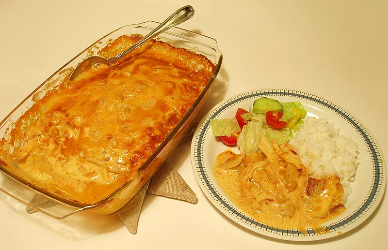

Flying Jacob

Next recipe
Description
The dish was invented by Ove Jacobsson, who worked in the air freight industry, hence the name. Asked to make the main dish for a
neighbourhood potluck in Stockholm in 1976.
Jacobsson combined the few ingredients available to him in his refrigerator into a casserole,
cooked it, and served it at the party, where it was a hit.
Ingredients
- 1 kg chicken file
- 300 g bacon
- 2 bananas
- 5 dl cream
- 2 dl chili sauce
- 1 tbsp madras curry powder
- 3 tbsp mango chutney
- 1,5 dl peanuts, salty
Steps
- Prepare the ingredients.
- Shred/cut chicken fillet and bacon.
- Place the chicken and bacon pieces in an oven dish where all the meat can fit.
- Slice the bananas and spread over the chicken and bacon pieces.
- Mix the cream with chili sauce, curry and mango chutney. Pour over.
- Sprinkle with peanuts and the chopped chilies.
- Gratinate in the middle of the oven for 25-30 minutes.
- Serve Flying Jacob with boiled rice (i used black rice this time) and with pressed cucumber
Main page